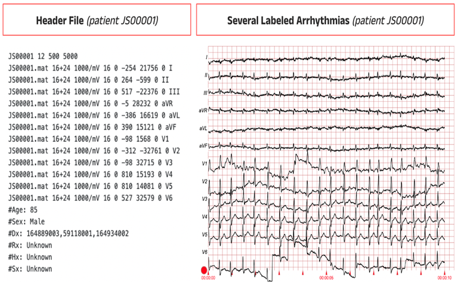
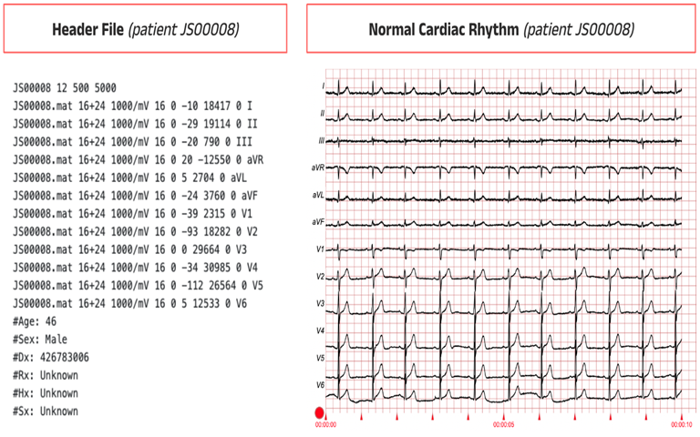
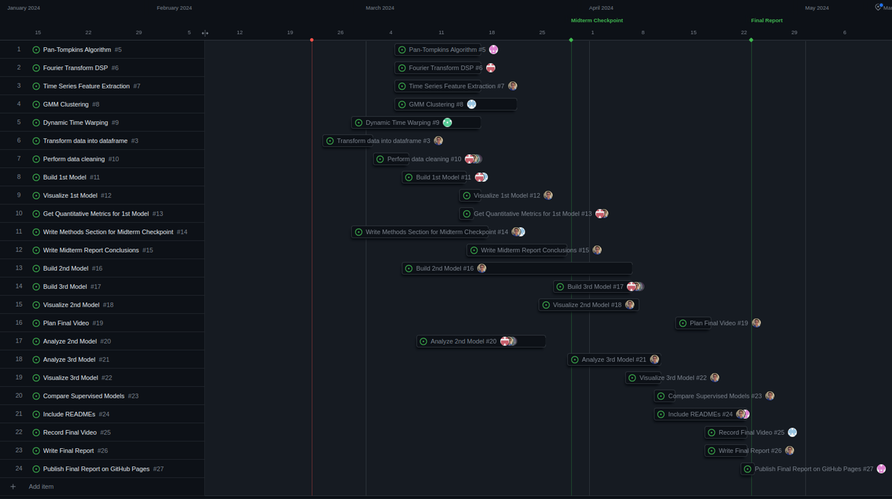

Multilabel Classification of 12-lead Electrocardiograms (ECGs)
Dataset Link: https://physionet.org/content/ecg-arrhythmia/1.0.0/WFDBRecords/01/010/#files-panel
Introduction, Background & Problem Definition
An electrocardiogram (ECG) uses 12 leads to measure body surface voltages, aiding physicians in diagnosing heart diseases and arrhythmias. [1] Since the 1970s, deterministic computer programs have helped with ECG analysis, but recent advancements in machine learning, especially deep learning [2]–[5] offer superior accuracy. [6] For example, a recent model achieved an F1 score of 99.99% for heartbeat abnormality classification. [7]
Despite these advances, clinical adoption of these mostly black-box models remains limited. [8], [9] To increase acceptance by physicians, classification models of heart conditions are needed that are explainable (perhaps through a saliency map) and that give well-calibrated probabilistic classifications. Sophisticated models have been known to flounder in production. [10] To earn the trust of physicians, the uncertainty of models must be addressed. [11] To our knowledge, machine learning-based interpretations of ECGs today fail to inform physicians of the uncertainty in their predictions. Doctors need more than a label. They need to know if they can trust it.
To meet these objectives, we obtained an open-access de-identified dataset of 45,152 patients of 12-lead ECG signals from PhysioNet. [12]–[14] The patients come from two hospitals in China. Each ECG is accompanied by header information on the patient’s sex, age, prescriptions, medical history, and prior surgeries. Importantly, each ECG is expertly labeled using SNOMED CT codes for 63 heart conditions.
 Methods
To maximize the utility of our model in real-world clinical situations, we will perform multi-label probabilistic classification using the expert labels as our training guide.
Data Preprocessing
- Pan-Tompkins algorithm (to extract the QRS complexes in the ECGs)
- Fourier transforms
- PCA
- ICA
- tslearn python library
- Time Series Feature Extraction Library
Unsupervised ML Methods
- We will take the expert labels and other clinical data and cluster them to identify interesting clusters of diagnoses. We will use Gower’s distance metric [15] and DBSCAN. [16]
- Market basket analysis of non-ECG clinical data will be used to identify co-occurring diagnoses. [17]
- Kernel density estimation of number of labels per patient
- Cluster ECGs using Dynamic Time Warping metric with GMM soft clustering
Supervised ML Methods
- Forecasting of ECG signals via TimesNet [18] for denoising
- We intend to experiment with both convolutional & recurrent ANNs (possibly with LSTM) for ECG diagnosis label prediction. One review [19] published in 2020 found that using an ensemble approach with a CNN and an RNN worked effectively.
- Transformer
Our probabilistic classifications will be inferred in a hierarchy. Models will give, first, the posterior probability of an unhealthy ECG and, second, the probabilities for each unique unhealthy label. Calibration will be performed [11] using the validation set with isotonic regression. [20]
Results & Discussion
Unsupervised Evaluation
Internal Measures
- silhouette coefficient [21]
- Dunn index [22]
- Davies-Bouldin index [23]
External Measures
- Adjusted Rand Index [24]
- Adjusted Mutual Information [25]
- Fowlkes–Mallows index [26]
Supervised Evaluation
Our supervised methods will yield posterior prediction intervals for each diagnostic label for each patient.
- Hamming Loss, Jaccard index, subset accuracy, precision, recall, F1 score, mean average precision [27] (with 50% cutoffs)
- Saliency mapping [28], [29] using tools like CaptumAI. [30]
Contributions

Gantt Chart
References
[1] P. M. Rautaharju, “Eyewitness to history: Landmarks in the development of computerized electrocardiography.,” J. Electrocardiol., vol. 49, no. 1, pp. 1–6, Feb. 2016, doi: 10.1016/j.jelectrocard.2015.11.002.
[2] R. Kamaleswaran, R. Mahajan, and O. Akbilgic, “A robust deep convolutional neural network for the classification of abnormal cardiac rhythm using single lead electrocardiograms of variable length.,” Physiol. Meas., vol. 39, no. 3, p. 035006, Mar. 2018, doi: 10.1088/1361-6579/aaaa9d.
[3] O. Faust, Y. Hagiwara, T. J. Hong, O. S. Lih, and U. R. Acharya, “Deep learning for healthcare applications based on physiological signals: A review.,” Comput. Methods Programs Biomed., vol. 161, pp. 1–13, Jul. 2018, doi: 10.1016/j.cmpb.2018.04.005.
[4] G. Sannino and G. De Pietro, “A deep learning approach for ECG-based heartbeat classification for arrhythmia detection,” Future Generation Computer Systems, vol. 86, pp. 446–455, Sep. 2018, doi: 10.1016/j.future.2018.03.057.
[5] Z. I. Attia et al., “Prospective validation of a deep learning electrocardiogram algorithm for the detection of left ventricular systolic dysfunction.,” J. Cardiovasc. Electrophysiol., vol. 30, no. 5, pp. 668–674, May 2019, doi: 10.1111/jce.13889.
[6] A. Shaik et al., “Erroneous electrocardiographic interpretations and its clinical implications.,” J. Cardiovasc. Electrophysiol., vol. 34, no. 7, pp. 1515–1522, Jul. 2023, doi: 10.1111/jce.15943.
[7] A. Darmawahyuni et al., “Deep learning-based electrocardiogram rhythm and beat features for heart abnormality classification.,” PeerJ Comput. Sci., vol. 8, p. e825, Jan. 2022, doi: 10.7717/peerj-cs.825.
[8] S. Khurshid, “Clinical perspectives on the adoption of the artificial intelligence-enabled electrocardiogram.,” J. Electrocardiol., vol. 81, pp. 142–145, Sep. 2023, doi: 10.1016/j.jelectrocard.2023.08.014.
[9] A. Sau and F. S. Ng, “--The emerging role of artificial intelligence enabled electrocardiograms in healthcare.,” bmjmed, vol. 2, no. 1, p. e000193, Jul. 2023, doi: 10.1136/bmjmed-2022-000193.
[10] D. Kaur et al., “Race, sex, and age disparities in the performance of ECG deep learning models predicting heart failure.,” Circ. Heart Fail., vol. 17, no. 1, p. e010879, Jan. 2024, doi: 10.1161/CIRCHEARTFAILURE.123.010879.
[11] D. Feng, A. Harakeh, S. L. Waslander, and K. Dietmayer, “A review and comparative study on probabilistic object detection in autonomous driving,” IEEE Trans. Intell. Transport. Syst., pp. 1–20, 2021, doi: 10.1109/TITS.2021.3096854.
[12] A. L. Goldberger et al., “PhysioBank, PhysioToolkit, and PhysioNet: components of a new research resource for complex physiologic signals.,” Circulation, vol. 101, no. 23, pp. E215-20, Jun. 2000, doi: 10.1161/01.cir.101.23.e215.
[13] J. Zheng, H. Guo, and H. Chu, “A large scale 12-lead electrocardiogram database for arrhythmia study,” PhysioNet, 2022, doi: 10.13026/wgex-er52.
[14] J. Zheng et al., “Optimal Multi-Stage Arrhythmia Classification Approach.,” Sci. Rep., vol. 10, no. 1, p. 2898, Feb. 2020, doi: 10.1038/s41598-020-59821-7.
[15] J. C. Gower, “A General Coefficient of Similarity and Some of Its Properties,” Biometrics, vol. 27, no. 4, pp. 857–871, Dec. 1971, doi: 10.2307/2528823.
[16] M. Ester, H. P. Kriegel, J. Sander, and X. Xu, “A density-based algorithm for discovering clusters in large spatial databases with noise,” kdd, 1996.
[17] “Mlxtend.frequent patterns - mlxtend.” [Online]. Available: https://rasbt.github.io/mlxtend/api_subpackages/mlxtend.frequent_patterns/. [Accessed: 22-Feb-2024]
[18] H. Wu, T. Hu, Y. Liu, H. Zhou, J. Wang, and M. Long, “Timesnet: Temporal 2d-variation modeling for general time series analysis,” arXiv preprint arXiv …, 2022.
[19] S. Hong, Y. Zhou, J. Shang, C. Xiao, and J. Sun, “Opportunities and challenges of deep learning methods for electrocardiogram data: A systematic review.,” Comput. Biol. Med., vol. 122, p. 103801, Jul. 2020, doi: 10.1016/j.compbiomed.2020.103801.
[20] A. Niculescu-Mizil and R. Caruana, “Predicting good probabilities with supervised learning,” in Proceedings of the 22nd international conference on Machine learning - ICML ’05, New York, New York, USA, 2005, pp. 625–632, doi: 10.1145/1102351.1102430.
[21] P. J. Rousseeuw, “Silhouettes: A graphical aid to the interpretation and validation of cluster analysis,” Journal of Computational and Applied Mathematics, vol. 20, pp. 53–65, Nov. 1987, doi: 10.1016/0377-0427(87)90125-7.
[22] J. C. Dunn, “Well-Separated Clusters and Optimal Fuzzy Partitions,” Journal of Cybernetics, vol. 4, no. 1, pp. 95–104, Jan. 1974, doi: 10.1080/01969727408546059.
[23] D. L. Davies and D. W. Bouldin, “A cluster separation measure.,” IEEE Trans. Pattern Anal. Mach. Intell., vol. 1, no. 2, pp. 224–227, Feb. 1979, doi: 10.1109/TPAMI.1979.4766909.
[24] D. Steinley, “Properties of the Hubert-Arabie adjusted Rand index.,” Psychol. Methods, vol. 9, no. 3, pp. 386–396, Sep. 2004, doi: 10.1037/1082-989X.9.3.386.
[25] N. X. Vinh, J. Epps, and J. Bailey, “Information Theoretic Measures for Clusterings Comparison: Variants, Properties, Normalization and Correction for Chance,” Journal of Machine Learning Research, 2010.
[26] E. B. Fowlkes and C. L. Mallows, “A method for comparing two hierarchical clusterings,” J. Am. Stat. Assoc., vol. 78, no. 383, pp. 553–569, Sep. 1983, doi: 10.1080/01621459.1983.10478008.
[27] S. M. Beitzel, E. C. Jensen, and O. Frieder, “MAP,” in Encyclopedia of database systems, L. Liu and M. T. Özsu, Eds. Boston, MA: Springer US, 2009, pp. 1691–1692.
[28] I. E. Nielsen, D. Dera, G. Rasool, R. P. Ramachandran, and N. C. Bouaynaya, “Robust Explainability: A tutorial on gradient-based attribution methods for deep neural networks,” IEEE Signal Process. Mag., vol. 39, no. 4, pp. 73–84, Jul. 2022, doi: 10.1109/MSP.2022.3142719.
[29] Y. Jones, F. Deligianni, and J. Dalton, “Improving ECG Classification Interpretability using Saliency Maps,” in 2020 IEEE 20th International Conference on Bioinformatics and Bioengineering (BIBE), 2020, pp. 675–682, doi: 10.1109/BIBE50027.2020.00114.
[30] “Captum Insights · Captum.” [Online]. Available: https://captum.ai/docs/captum_insights. [Accessed: 22-Feb-2024]